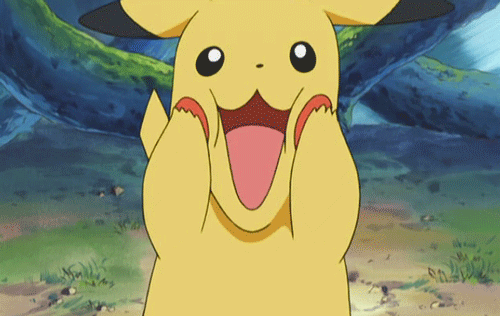

皮卡丘一开始不听小智的话，也不愿意呆在精灵球中，后与小智经历烈雀事件后，皮卡丘开始听从小智的话，而且还和小智默契十足。
它拒绝进化，因为它相信凭借自己的能力也能战胜对手。它有时候会帮忙照顾同伴中一些比较弱小的宝可梦，比如小霞的波克比。它和小智一样，对战斗充满着热情。相反，若小智不在它身边，它的战斗力会减弱，甚至没有心情去战斗。
皮卡丘的脸似乎特别有韧性，有时会做十分夸张的拉伸，甚至被水莲的妹妹－诗婷和诗涵拉扯时，它也不在意。此外，它也十分爱护自己的脸和身体，若他的脸或身体被人（包括小智）或宝可梦折磨，它会显得很生气并使用十万伏特攻击折磨的对象和附近的人或宝可梦。
小智的皮卡丘在称呼不同的人和宝可梦时会有特定的叫声，以至于听上去就像是有个皮卡丘语言